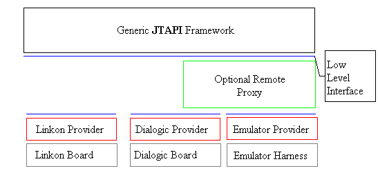

This document is intended to act as a guide for developers of TelephonyProvider implementations. As such, it briefly introduces the architecture of the Generic JTAPI system and defines the major components of the TPI implementation and what they must support.
The Generic JTAPI framework is a JTAPI implementation that allows for telephony board and VOIP implementations to be plugged-in at a lower level through the implementation of a relatively simple (as compared to JTAPI) "Service Provider Interface", known here as the Telephony Provider Interface (TPI). In this regard it shares some architectural similarities with TAPI.
Overview
Table of Contents
Version
Background
Goals
Architecture
API Categorization
TelephonyProvider Categorization
Implementation Matrix
Object Mapping
Components
Initialization
Capabilities
Basic Call Control
Exceptions
Events
Media
Fax
Summary
Version Author Date Comment Richard Deadman March 17, 2000 Initial Draft Richard Deadman March 17, 2000 Added Event Control Discussion Richard Deadman April 14, 2000 New Initialization options, Media Framework, Fax Richard Deadman May 5, 2000 New TelephonyListener interface, changed signal detector return value, simplified listener management, Telephony provider capabilities support. Richard Deadman May 16, 2000 Some media comments to reflect extra requirements in order to support properly 1.2 deprecated media. Richard Deadman June 16, 2000 Updated to new TelephonyProvider and TPI naming. Richard Deadman June 27, 2000 Added support for weak synchronization and call state querying.
The Generic JTAPI framework is a JTAPI implementation that acts to reduce the amount of work required for JTAPI support to be given to telephony systems (boards, PBXes and IP telephony). As such, it consists of two major pieces:
- A generic JTAPI layer
- Vendor or protocol-specific low-level adapter layers
The architecture may be viewed as:

where the blue lines represent a common interface between system modules. With such an architecture, complex object modelling and event handling that not dependent on vendors or protocols
The goals of the TPI are fairly simple:
- Provide an interface that is an order-of-magnitude easier to implement that a full-blown JTAPI implementation.
- Support a key sub-set of JTAPI functionality:
- Core
- Call Control -- hold, conference, transfer, drop
- Media
- Decouple the SPI implementation from the Generic JTAPI layer. Interactions between the two should occur on as thin and interior-object-free of an interface as possible.
- Allow for TPI implementations to be plugged into the framework on the fly
- Allow for proxy bridges to be optionally injected between the JTAPI layer and the SPI implementor. One example might be to insert a remote TPI proxy that allows an TPI to transparently exist on a remote machine.
- To move all complexity out of the TPI implementor's domain. For instance, proper event queuing and dispatching should be handled by the framework; the TPI implementation should not have to worry that sending an event to the framework may block or take excessive time.
API Categorization
The TPI consists of 18 classes and interfaces, only one of which must be implemented by the TPI creator. These can be broken down into the following groups:
| Package | Class | Type | Group | Comment | Use/Implement |
|---|---|---|---|---|---|
| com.uforce.jtapi.generic | TelephonyProvider | Interface | Core - These are the interfaces that the TPI implementor is required to implement | Main Interface to implement | Implement |
| CallId | Interface | Core | Marker interface to provide call identity. | Implement | |
| RawSigDetectEvent | Class | Media Events | These encapsulate complex return values needed by the signal detector retreiveSignals method. | Use | |
| RawStateException | Class | Exception | This is an exception object that can be morphed in the framework into one pointing at appropriate framework classes. | Use | |
| TelephonyListener | Interface | Callback | This is a callback object that registers for events | Use | |
| CallData | Class | Data Wrapper | This is a composite object that allows the return of call data. | Use | |
| ConnectionData | Class | Data Wrapper | This is a composite object that allows the return of connection data. | Use | |
| TCData | Class | Data Wrapper | This is a composite object that allows the return of terminal connection data. | Use | |
| TermData | Class | Data Wrapper | This is a composite object that allows the return of terminal data. | Use | |
| com.uforce.jtapi.generic.media | GenericMediaEvent | Class | Media Events | The following six are needed in order to allow a MediaResourceException to be thrown from various synchronous Media methods. | Abstract parent |
| GenericResourceEvent | Class | Media Events | See GenericMediaEvent | Abstract parent | |
| GenericPlayerEvent | Class | Media Events | See GenericMediaEvent | Use | |
| GenericRecorderEvent | Class | Media Events | See GenericMediaEvent | Use | |
| GenericSignalDetectorEvent | Class | Media Events | See GenericMediaEvent | Use | |
| GenericSignalGeneratorEvent | Class | Media Events | See GenericMediaEvent | Use | |
| com.uforce.jtapi.generic.raw | AbstractRawProvider | Abstract Class | Helper Template | This is an abstract implementation of TelephonyProvider that can be extended by TPI implementors to speed up implementation. | Optional |
| RawListenerMux | Class | Helper | This is a helper class that can be used by TelephonyProviders to multiplex multiple TelephonyListeners into one. | Optional | |
| RawListenerPool | Class | Helper | This is an asynchronous event delivery helper that allows a remote TelephonyProvider, for instance, to hand of responsibility for sending update events so that it does not suffer network latency. | Optional |
As we can, of the 18 classes and interfaces, only two must be implemented and three are optional helper templates or classes. As well, four media events may be required to be created by a TelephonyProvider for the proper throwing of MediaResourceException on media calls (see below).
This may be a little too simplistic, however, since the TPI also requires the usage of JTAPI media objects and exceptions not listed in the TPI explicitly:
| Class | Category | Comment |
|---|---|---|
| Exceptions | ||
| PriviledgeViolationException | Exceptions | All JTAPI methods can call this to indicate that the user does not have sufficient privilege to execute the operation. |
| ResourceUnavailableException | Exceptions | All JTAPI methods can call this to indicate that the operation failed for resource contention reasons. |
| MethodNotSupportedException | Exceptions | Generally indicates that the SPI does not support that operation. This should also be noted in the capabilities for the SPI. |
| InvalidPartyException | Exceptions | Indicates that a party was not valid for a call. |
| InvalidArgumentException | Exceptions | Indicates that an argument was not valid for a call. |
| ProviderUnavailableException | Exceptions | Indicates that the SPI could not be properly initialized. |
| MediaResourceException | Media Exception | A wrapper for a Media Event that describes what went wrong. |
| Media | ||
| RTC | Media | This is a collection of a event signal and an action symbol that indicates that when the event occurs the action should be taken. |
| Symbol | Media | These are abstract ids for media events and actions. |
| Method | Comment |
|---|---|
| Initialization | |
| initialize() | Called after creation to pass in any initialization parameters |
| getCapabilities() | Can also be though of as part of a Capabilities category. Returns basic call control capability information, as well as any tuning of TelephonyProvider calls. See TelephonyProvider tuning in Capabilities section. |
| getAddresses() | Gets the static address set that is managed. |
| getTerminals() | Gets the terminals associated with an address. |
| isMediaTerminal() | See Media |
| shutdown() | Tells the TPI it can release its resources. |
| Low-level State Querying (Weak Synchronization) | |
| getAddresses() | See Initialization |
| getAddresses(String term) | Determine if a Terminal named term exists and return its Address names. |
| getTerminals() | See Initialization |
| getTerminals(String addr) | Determine if an Address named addr exists and return its Terminal names. |
| getCall() | Query the low-level TelephonyProvider for the state of an untracked call. |
| getCallsOnAddress() | Return a snapshot of all Calls currently at an Address. |
| getCallsOnTerminal() | Return a snapshot of all Calls currently at a Terminal. |
| Basic Call Control | |
| answerCall() | Answer a call at a particular terminal on a particular address. |
| createCall() | Create a call from an address/terminal pair to a destination string |
| hold() | hold a call at an address/terminal pair |
| unHold() | unhold a call at an address/terminal pair |
| join() | merge a second call into the first one. |
| release() | release a call leg at an address/terminal pair. |
| CallId Management | |
| reserveCallId() | Reserve a call id for subsequent use. This takes care of events arriving for unregistered CallIds during a createCall() |
| releaseCallId() | Tell the system it may now safely dispose of a CallId since the framework no longer tracks it. |
| Event Control | |
| addListener() | Add an listener for call and media events. Only one will ever be registered, so the TelephonyProvider implementation does not need to manage a set of these. |
| removeListener() | Remove an event observer. This can usually be ignored. |
| reportCallsOnAddress() | Report events on calls that visit an address. See reportCall(). This may never be called depending on the TelephonyProvider capabilities tuning. |
| reportCallsOnTerminal() | Report events on calls that visit a terminal. See reportCall(). This may never be called depending on the TelephonyProvider capabilities tuning. |
| stopReportingCall() | Tell the TelephonyProvider that it no longer needs to report call events for a call. |
| Media | |
| allocateMedia() | Allocate appropriate media resources to a terminal. This may never be called depending on the TelephonyProvider capabilities tuning. |
| freeMedia() | Free media resources allocated to a terminal. This may never be called depending on the TelephonyProvider capabilities tuning. |
| isMediaTerminal() | Determine is a terminal supports media resources (This may also be considered part of Initialization). This may never be called depending on the TelephonyProvider capabilities tuning. |
| play() | Play a media resource over a call at a terminal. |
| record() | Record the media being received at a terminal. |
| retrieveSignals() | Retrieve DTMF signals received at a terminal. Return values are created with Factory methods of the RawSigDetectEvent class. |
| sendSignals() | Send DTMF signals to an active call at a terminal. |
| stop() | Stop all current media actions on a terminal |
| triggerRTC() | Send an RTC Trigger Symbol to a terminal's media resources. |
| Capability key | Meaning | Required Methods |
|---|---|---|
| (core) | These are the core methods that all TelephonyProviders must implement | initialize()
getCapabilities() getAddresses() getAddresses(String) getTerminals() getTerminals(String) releaseCallId() addListener() removeListener() shutdown() |
| answer | Can the TelephonyProvider answer calls? | answerCall() |
| create | Can the TelephonyProvider create new calls? | reserveCallId()
createCall() |
| hold | Can the TelephonyProvider hold and unHold calls? | hold()
unHold() |
| join | Can the TelephonyProvider join two calls together? | join() |
| release | Can the TelephohyProvider release a Connection? | release() |
| dynamicAddresses
or ResourceUnavailableException for getAddresses() or getTerminals() |
Do we allows for lazy intialization of the Address and Terminal pools? Note that the dynamicAddresses flag notes that these pools are in flux. To just indicate that they are too big to return all at once, the TelephonyProvider throws ResourceUnavailableException. | |
| throttle | If true, this indicates that not all call events are reported. Therefore calls will be unknown to the Framework unless queried for. The Framework ensures that a "flushed in" Call is reported on. | getCall()
getCallsOnAddress() getCallsOnTerminal() reportCallsOnAddress() reportCallsOnTermina() stopReportingCall() |
| media | Does the TelephonyProvider support media services? | allocateMedia()
freeedia() play() record() receiveSignals() sendSignals() stop() sendRTC() |
allMediaTerminals |
Are all Terminals Media capable? This only applies if "media" mapped to true. If false, the following method must be implemented. | isMediaTerminal() |
As we can see, a basic TelephonyProvider without throttling, dynamic addresses or media support needs only implement 10 of the 32 TelephonyProvider methods.
These are all full-fledged objects with state and behaviour associated with them. For a pluggable interface, however, it is desirable to abstract these objects and instead provide logical references, so that:
- The interface is as loosely coupled as possible.
- As little implementation constraints as possible are placed on the TPI implementor. We do not want the TPI Implementor to have to implement Call, for instance, or corrupt their object model with JTAPI concepts.
- To allow for easy serialization (i.e. remote access)
For these reasons, the five JTAPI objects are never exposed to the TPI interface. Instead String references and a CallId interface are defined. It is assumed that Addresses and Terminals will both have unique String representations. For calls, the TPI implementor is required to support the creation of unique CallId objects that can be used as call handles. Since the CallId interface is simply a marker interface, its implementation is relatively trivial. If the TPI implementor has an object that represents calls and obeys the "equals()" and "hashCode()" contracts (as all objects should), it can simply be declared to implement CallId. Alternatively an TPI implementor that used long integers to reference calls could create a simple CallId object that wraps the "long" value and implements equals() and hashCode appropriately.
import com.uforce.jtapi.generic.CallId; public class SimpleCallId implements CallId {
private long id;
public SimpleCallId(long newId) {
this.id = newId;
}
long getId() {
return this.id;
}
public boolean equals(Object o) {
if (o instanceof SimpleCallId &&
(((SimpleCallId)o).getId() == this.getId())) {
return true;
}
return false;
}
public long hashCode() {
return this.getId();
}
}
|
Note that CallId does not have to be serializable, since this may place too onerous a restriction on the CallId implementation. It is the responsibility on any remote interface to map non-serializable CallIds to proxy CallIds that can safely be serialized.
The mapping of JTAPI objects to CallIds and address and terminal Strings can then be seen as:
| CallID | address String | terminal String | |
|
|
|
||
|
|
|
||
|
|
|
||
|
|
|
|
|
|
|
|
|
|
This means, for instance, that a Connection object in JTAPI is mapped to a CallID/address String pair in the TPI.
Initialization
The generic JTAPI framework is responsible for finding and loading the TPI implementation. The GenericJtapiPeer (JtapiPeer) implementation is loaded in one of the normal JTAPI specified manners, supporting the JtapiPeerFactory, DefaultJtapiPeer and explicit peer instantiation. The selection of the correct TelephonyProvider is performed during the JtapiPeer.getProvider() method. Implementors have three options for hooking their TelephonyProvider interface class into the framework:
- Place an entry in the "GenericResources.props" file that identifies the TelephonyProvider class with a lookup name. This lookup name can then be passed in as part of the ";"-separated "getProvider() parameter string. The GenericResources.props file allows for the specification of a default TelephonyProvider if no name is provided.
- If the TelephonyProvider class is not referenced in the GenericResources.props file, it may be explicitly defined as a fully-qualified class name as the first part of the "getProvider()" parameter string.
- Finally, the GenericJtapiPeer class can be subclassed to override "getDefaultProvider()". This allows the GenericJtapiPeer subclass to define the default provider that is hooked in if no TelephonyProvider name or fully-qualified class name is passed in to "getProvider()". With this option, it is possible to hook the Generic JTAPI Framework with a desired Provider into a JTAPI application without modifying the GenericResources.props file or requiring the application to use a non-default provider string.
After the implementation has been loaded, it is initialized prior to being used. This initialization take two forms:
- TPI initialization. The framework will call the TPI with the following call: "initialize(Map props)". This call passes in a dictionary of name-value pairs that describe the TPI usage environment. The TPI is free to use these, and any that it might load itself (i.e. from a Resource file) to complete any initialization, such as authorization or address domain selection. The TPI will not be used until this call has been made.
- Framework initialization. After the framework has successfully loaded an TPI, it will perform some interrogation on that TPI to determine what the framework's operational constraints are. Specifically it will:
- Ask the TPI for its capabilities with "getCapabilities()". This should return a simple dictionary that lists t/f values for the base TPI functions: (answer, create, hold, join, release)
- Ask the TPI for the list of Addresses it supports with "getAddresses()". For each address, a follow-up call of "getTerminals(String address)" will also occur.
Capabilities
Static and Dynamic capabilities are handled within the Generic JTAPI Framework. The only responsibility that the TPI has for capabilities is in returning a Properties object that notes any non-default capabilities between the names (answer, create, hold, join, release) and "t/f" strings or Boolean values. A simple way for an TPI implementation to implement capabilities is for it to:
- Copy the Generic JTAPI Framework capabilities file (GenericCapabilities.props)
- Alter its values to reflect the TPI call control implementation
- Load the file into a java.util.Properties object
- Return the Properties object from "getCapabilities()".
If framework default capabilities are supported, it is legal to return a null.
Note that the JTAPI transfer and conference methods are not directly supported in this list, since they are implemented as combinations of the five basic call-control functions. For instance, a blind transfer consists of placing a call on hold, creating a second call, joining the two calls and releasing the call from the transferring terminal. The Generic JTAPI framework calculates transfer and conference capabilities based on whether all the required base functions are supported. As well, dynamic capabilities are determined in the generic JTAPI framework by combining static capabilities with the current state of the the particular JTAPI object.TelephonyProvider Tuning
In addition to these direct call-related capabilities, the Capabilities Property file also lists some tuning Capabilities that set up a contract between the Framework and the TelephonyProvider. This contract allows for more efficient calling of the TelephonyProvider, which may improve performance and, if a remote proxy is used, dramatically reduce network performance. The four properties are:
| Property | Meaning |
|---|---|
| throttle | By default, the Generic JTAPI Framework issues event throttling calls
to tell the Telephony provider which events it is interested in receiving
(reportCall()...). This reduces the number of potential resources
the Telephony provider must allocate and reduces the amount of callback
traffic.
For some providers, however, they will report all call events anyway. Setting "throttle" to "f" will eliminate the redundant issuing of ignored throttling calls. Default value: "t" |
| media | During initialization, the Framework asks the TelephonyProvider if
each returned terminal supports media. If the Telephony provider
does not support media at all, these queries are unnecessary and may be
suppressed by setting the "media" value to "f".
Default value: "t" |
| allMediaTerminals | If the TelephonyProvider does support media, it may support media for
all Terminals. Setting "allMediaTerminals" to "t" turns all Terminals
into MediaTerminals without needless Telephony provider queries.
Default value: "f" |
| allocateMedia | If the TelephonyProvider does support media, do we need to call allocateMedia
if we are not passing in any dictionaries? In other words, are media
by default always allocated?
Default value: "t" |
| allocateMedia | Media may require the Telephony provider to allocate resources for
a terminal, and so the Framework by default sends explicit media resource
allocation and free messages. Some Telephony providers, however,
my ignore these suggestions since media resources are free and always attached.
Setting "allocateMedia" to "f" avoids the sending of these unnecessary
messages.
Default value: "t" |
As well, the TPI supports the explicit Generic JTAPI Framework management of CallIds. The Framework may request a CallId and then later use the CallId to create an actual call. For incoming calls, the CallId is reported through a FreeCallEvent sent to the Framework's CallObserver. CallIds must be unique in time but once the TPI receives a releaseCallId() call for a CallId, the Framework no longer retains a handle to the CallId and the CallId may be discarded or re-used. In both the creation of calls by the Framework and the death of call notification by FreeCallEvent, the CallId management is a two-phase process. This two-phase process is required to ensure that glares do not occur. Consider a system without these management calls:
- No createCallId(). The Framework asks for the creation of a new call. In the TPI, the call is created and started and call progress events are sent to the TelephonyListener Framework callback object. Then the createCall() method returns the CallId. Now the "new call" event and the return value are racing to see who can update the Framework first. If the event wins then a new Call object will be created that will be logically identical to the Call object that initiated the createCall() method. This is not "a good thing".
- No releaseCallId(). A call is killed and the TPI sends a FreeCallEvent indicating the call is dead and then removes the CallId from its local list of known calls. Between the time that the event is sent to the Framework and the time that it is processed, an action with that call is initiated and causes a TPI method to be invoked (i.e. hold()). Since the CallId is no longer known, the TPI will through an exception such as ResourceUnavailableException or InvalidArgumentException instead of the appropriate RawStateException. Event worse, the CallId may by this time have been re-used, causing an unintended side-effect on an unrelated call. Not "a good thing" either.
Exceptions
Of the twenty-seven methods in the TelephonyProvider interface class, only eleven throw exceptions, and these can be broken into three major groups:
| Group | Methods | Exceptions | Comment |
|---|---|---|---|
| Initialization | initialize() | ProviderUnavailableException | This exception is called to indicate that a provider could not be properly initialized. |
| Call Control | answerCall()
createCall() hold() join() release() unHold() |
PriviledgeViolationException
ResourceUnavailableException MethodNotSupportedException InvalidPartyException InvalidArgumentException RawStateException PlatformException |
These exception denote:
|
| Media | play()
record() sendSignals() retrieveSignals() |
MediaResourceException | An exception that wraps a ResourceEvent that describes what went wrong with the Media device. |
With the exception of RawStateException, these are all exception classes defined in JTAPI itself. RawStateException is an extension of InvalidStateExtension necessary since the JTAPI objects are not exposed at the TPI level.
For each of these eleven methods, the TPI implementor is free to throw the available exceptions if unexpected conditions occur. The meaning of the exceptions is fairly clear and translates well to most telephony environments. Of course, if an exception does not seem to apply, the implementor does not have to declare or use it. On the other hand, if some exception occurs that is not mappable easily to this list, a PlatformException, since it is a Runtime exception denoting catastrophic failures, can always be thrown. An example of this might be in a remote TPI proxy that delegates TPI calls off to a remote implementation. If a remote exception is caught, indicating that our link to the remote implementation has failed, it is reasonable to throw a PlatformException, since recovering from this situation is not likely.Events
The TPI makes no assumptions about the object model or state machine for TPI implementations. It must, however, be notified of certain changes, such as when a call arrives or a DTMF signal is received. Originally the Generic JTAPI framework relied on an Observer-style event notification scheme that required the Telephony provider to generate the correct event objects and call the TelephonyListener callback object with the event.
Unfortunately, this design left it very unclear on exactly which events were expected and what the required event information is. For this reason, the Generic JTAPI Framework event notification scheme was reworked to provide a more Listener-oriented paradigm. This is intended to make it easier for a Telephony provider to properly throw events without having to understand the JTAPI event hierarchy.
The following events are supported by the new TelephonyListener interface:
| Method | Type | Comment |
|---|---|---|
| callActive | Call Event | Indicates that a Call has become active |
| callInvalid | Call Event | Indicates that a Call has ended. |
| connectionInProgress | Connection Event | A Connection is being routed. |
| connectionAlerting | Connection Event | A Connection is ringing. |
| connectionConnected | Connection Event | The Connection is now live |
| connectionDisconnected | Connection Event | The Connection has been disconnected |
| connectionFailed | Connection Event | The Connection failed (busy signal?) |
| terminalConnectionCreated | TerminalConnection Event | A terminal has been added to a connection |
| terminalConnectionRinging | TerminalConnection Event | The terminal is ringing |
| terminalConnectionTalking | TerminalConnection Event | The terminal is in the call |
| terminalConnectionHeld | TerminalConnection Event | The terminal is held |
| terminalConnectionDropped | TerminalConnection Event | The terminal has been dropped from the call |
| mediaPlayPause | Media Event | The player has paused due to an RTC trigger |
| mediaPlayResume | Media Event | The player has resumed due to an RTC trigger |
| mediaRecorderPause | Media Event | The recorder has paused due to an RTC trigger |
| mediaRecorderResume | Media Event | The recorder has resumed due to an RTC trigger |
| mediaSignalDetectorDetected | Media Event | The signal detector has detected a particular signal |
| mediaSignalDetectorOverflow | Media Event | The signal detector has filled it signal buffer |
| mediaSignalDetectorPatternMatched | Media Event | The signal detector has detected a pattern |
While not strictly speaking an event, the SignalDetector.receiveSignals() method requires a complex set of information to be returned to it detailing why the synchronous call returned. Originally the TelephonyProvider required the return of a complex SignalDetectorEvent. Creating such an event is not easy and subject to the same issues as callback event notification. For this reason, the class RawSigDetectEvent was created with six static factory methods to ease its creation:
| Static Factory Method | Comment |
|---|---|
| initialTimeout() | Creates an event that indicates that no signal was received within the initial signal reception timeout period. |
| interSigTimeout() | Creates an event that indicates that no signal was received within the inter-signal timeout period. |
| timeout() | Creates an event that indicates that no the overall signal reception period expired with less than the requested number of signals detected. |
| maxDetected() | Creates an event that indicates that the maximum number of requested signals was collected. |
| patternMatched() | Creates an event that indicates that a signal pattern was matched. |
| rtcStopped() | Creates an event that indicates that the signal collection was stopped as a result of a signal being detected that triggered a RunTimeControl that told the signal generator to stop collected signals. |
Note that removeListener() is still supported. Most TelephonyProviders can choose to ignore this call. This call might seem unnecessary, but it is required by the remote Telephony provider proxy to properly manage multiplexed Generic JTAPI Framework clients that may be simultaneously connected to the same remote Telephony provider. Note that it is the responsibility of the Remote Telephony provider to properly delegate off TelephonyProvider events to all registered clients. If a new remote Telephony provider is required (i.e. for CORBA) there is a TelephonyListener multiplexor in the package "com.uforce.jtapi.generic.raw" that may be used.Callback Threading
Normally Framework providers must be careful with "callback" invocation that the callback processing does not block proper processing. Originally this was provied through the use of an asynchronous event pool processing thread. Unfortunately this makes Framework state updates non-deterministic and can lead to race conditions.In the current implementation, event callbacks do occur synchronously, but under tightly constrained conditions. The callback only updates the Generic Framewor's call state; client application events are dispatched through a separate thread.
Event Throttling
Obviously if a TelephonyProvider reported every state change on every call in a large telephony system, both the TelephonyProvider and the Generic JTAPI Framework would soon be overloaded with events to handle. Furthermore, for some vendors, monitoring all calls is an expensive operation that consumes valuable switch resources.
For this reason, the TPI defines two event control methods that allow Telephony providers to be informed of which subset of calls must be reported on, if "getCapabilities()" indicates that throttling is supported. "reportCallsOnAddress()" and "reportCallsOnTerminal()" indicate that calls connecting to a particular address or terminal should be reported on. The latter two are preferred over watching an Address or Terminal for events and then using the CallId in those events to start reporting on calls, since:As well, since the Framework amy hold onto a CallId after having let the Call be gabage collected, it may re-fetch call state through "getCall()".
- They map more closely to JTAPI reporting requests.
- The remove the glare condition where call events occur between the time that a call is noticed and the call is registered for events.
In all cases, whenever a CallId is returned by the TelephonyProvider to the Generic Framework, the TelephonyProvider has a contract to report all events on that call or its parts until such time as the call dies or a "stopReportingCall()" message is received.
Media
The Generic JTAPI Framework supports the ECTF Media framework introduced in JTAPI 1.3. As such, media services are thought of as resources attached to MediaTerminals. Unlike basic call control, media services are considered a contract and capabilities are not supported. That is, if an TPI implementor returns "true" to any "isMediaTerminal()" query, it must fully support media services on that terminal. Of course, if the "isMediaTerminal()" method always returns "false", media services need never be supported.
For a terminal which is declared to support media, there are four basic, two management and two auxiliary methods that may be called:
| Method | Type | Comment |
|---|---|---|
| allocateMedia() | allocation | Allocate the indicated collection of media resources for a media terminal |
| freeMedia() | allocation | Free the indicated media resources from a media terminal |
| play() | basic | Play a set of media streams referenced by a set of names, usually URLs |
| record() | basic | Record media to a stream indicated by a name (URL) |
| sendSignals() | basic | Play a set of DTMF signals indicated by a collection of symbols |
| retrieveSignals() | basic | Retrieve DTMF signals received since the buffers were last cleared |
| stop | auxiliary | Stop all running media actions |
| triggerRTC() | auxiliary | Modify behaviour of running methods (see RTC discussion below) |
To fully understand the TPI media support, the implementor must have some understanding of some ECTF media concepts. In particular, the ECTF defines:
- Symbols. These are identifiers for media "things", such as events or actions. One symbol, for instance, my note the reception of a DTMF signal. Another symbol may represent the "stop play" command.
- RTC. All Media methods support the concept of "Runtime Controls". These are collections of pre-defined event-responses. This allows, for instance, a media service user to tell the system to stop playing an audio file is DTMF is received. By pre-sending these event/actions to the media device, the response to telephony actions can be much quicker than if the system had to report a DTMF signal up to the Generic Framework using a media event, the framework had to pass it onto the JTAPI application and then that application had to turn around and issue a command back down through the framework to the media terminal to stop the audio playing.
- Optional arguments. These are basically configuration parameters that can be passed on from an application to a media service in a relatively unstructured fashion. For particular implementations, for instance, this may allow the playback speed or volume to be set.
An TPI implementation that supports media services will then have to:
- Determine which terminals will support media capture and insertion
- Be able to allocate and free media resources as required
- Be able to store event/ response symbols for requested actions
- Be able to detect state changes and
- send the appropriate events
- collect the appropriate signals into a buffer (DTMF)
- check for RTC actions to invoke
Signal detection, in particular, has three scenarios that cause the "retrieveSignals()" method to return:
- The number of requested signals have arrived
- A signal from a "pattern" set has arrived, indicating that the call should return even though the requested number of signals has not been collected.
- An RTC is invoked that stops the signal retrieval.
Note that the following should be supported, since the older 1.2 media relies on it:
- triggerRTC(PlayerConstants.rtca_Stop) to stop any active play command.
- triggerRTC(RecorderConstants.rtca_Stop) to stop any active record command.
- allocateMedia(..., ..., Dictionary dict) where if the dictionary contains an entry p_EnabledEvents -> ev_SignalDetected, the signal detector should send a mediaSignalDetected callback event for detected signals. If the entry is not there, signal reporting should be turned off.
Fax
Fax is a particular media type that is not currently supported explicitly by the JTAPI media framework. We note, however, that the ECTF Media framework defines symbols for FaxGenerator and FaxReceiver media resources. There are, then, two options for supporting Fax in the JTAPI media framework:
- Define new Media Resource interfaces for FaxGenerators and FaxReceivers and then define a FaxMediaService that hooks these resource types into a Media Group. The downside to this is that it may be superseded by the JTAPI 2.0 Media specification.
- Treat Fax as a special case of Player and Recorder URLs. That is, if a media Player is told to play a stream with a Fax URL, it would start up a fax generator, do call handshaking and send the fax file referenced by the URL. Recorders would similarly allow Fax reception. This option can be implemented with no changes to the TPI interface, but may require a raw Media service to either allocate Fax resources that may never be used, or throw runtime resource exceptions (breaking the media contract).
For simplicity sake, and until such time as the JTAPI media package is updated to support Fax resources, the Generic JTAPI framework adopts the second strategy. Faxes are send or received by specifying a Player or Recorder "streamId" as a URL of format:
fax:<real-ulr>
i.e. fax:file:/tmp/file.bmp
If a MediaService binds a Player and/or Recorder resource to itself, and the Telephony provider requires separate resources for Fax and normal media playing, the Telephony provider has two options:
- Reserve all possibly required resources to the terminal even though some might never be used.
- Only reserve non-fax resources, delaying fax resource allocation until needed. If a fax resource cannot be found when needed, a MediaResourceException may be thrown.
The strategy used by a particular Telephony provider depends on the fax resource allocation costs and possibly on the size of the line pool being managed. It is permissibly for the fax resource algorithm to be switched at runtime by specifying a provider parameter that is passed into the "getProvider()" call during initialization.
Independent of how a Telephony provider supports fax resource allocation, the Generic JTAPI framework will ensure that a media player request containing multiple "streamIds" will have either all or none of the "streamIds" matching the fax URL pattern.
Note that Fax support is subject to change depending on changes to the JTAPI media package in subsequent JTAPI releases.
The Generic JTAPI TPI defines a simplistic interface for the implementation of JTAPI-complient vendor or protocol providers. There is a trade-off between power and simplicity and the TPI tries to provide a balance that provides a useful set of functionality while not making the interface so large as to be un-manageable. This brief Implementor's Guide has attempted to outline briefly the intention and usage of each part of the TPI and how the framework facets (initialization, call control. media, exception, events) are supported.